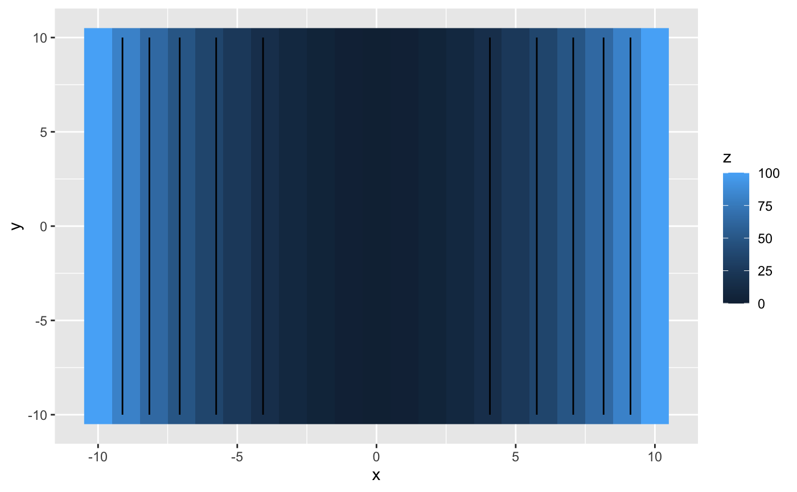

get_contourlines.RdGet contour lines, using a wrapper for contourLines
get_contourlines(df = NULL, nlevels = 10, drop_outer = TRUE, levels = NULL, ..., type = "data.frame", crs = 4326)
| df | A data.frame containing x, y, and z columns. x and y must form a raster, meaning every x must be represented for each y, and vice versa. |
|---|---|
| nlevels | An integer containing number of levels to return. Used IFF levels not supplied. |
| drop_outer | If |
| levels | A vector of values at which contours should be plotted. If used, nlevels is ignored. |
| ... | Should contain x, y, and z, and then df will be ignored. |
| type | Should be either "data.frame" or "sf" |
| crs | The target crs for "sf" output. Used as input in |
# Example 1 df <- expand.grid(x=-10:10,y=-10:10) df$z <- df$x^2 cl <- get_contourlines(df,nlevels=5) unique(cl$level)#> [1] 16.66667 33.33333 50.00000 66.66667 83.33333library(ggplot2) ggplot() + geom_raster(data=df,aes(x,y,fill=z)) + geom_path(data=cl,aes(x,y,group=line))#> [1] 15 20 60#> Warning: package ‘sf’ was built under R version 3.6.2#>df <- expand.grid(x=seq(-5,5,length.out=20),y=seq(-5,5,length.out=20)) df$z <- sqrt(df$x^2+df$y^2) cl <- get_contourlines(df,levels=seq(1,10,by=1.5), type="sf") ggplot() + geom_raster(data=df,aes(x,y,fill=z)) + geom_sf(data=cl,aes())